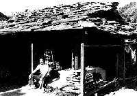
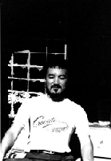
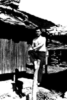
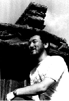
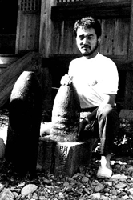

なぞの髭男

石屋根集落で出会った
あれは、いつの夏だっただろう。その髭男と出会ったのは。それは、長崎県対馬の西側にある小さな集落でのことだった。その集落には、石屋根で葺いた小屋が点在し、それが珍しいので酔狂な観光客がよく訪れる。
しかし、その夏は、ずいぶんと暑い夏で、対馬を訪れていた観光客の多くは、海水浴ができる島の北部の砂浜がある海岸地帯に行っていたせいだろうか。この集落に石屋根見物に来るものは、ごく少なかった。だからこそ、僕は、彼に会うことができたのだろう。

廃屋の縁側にて
男は僕が最初に見たとき、すでに廃屋と化した、石屋根の民家の縁側に腰をおろして、道行く人をぼうっと眺めていた。僕は「髭を生やした変な男がいるなあ」最初にそう思っただけで、足早にその男の前を通りすぎたのだが、破れた障子を背景に、ずいぶんと周囲の風景に溶け込んでいて、「ああ、なんか、いいなあ。このおっさん」と、そう思ったのもまた事実なのである。
それから、僕は、小さな観光案内板に従って、集落の中の石屋根群を順繰りにたずねて歩いた。直射日光が容赦なく照りつけるので、シャツの下は汗でびっしょりである。涼を求めるにも、近くの川は涸れ川だし、都会と違って、周囲には清涼飲料水を売っている店もない。結局、謎の髭男がそうしているように、廃屋の縁側に座り込んで、強烈な夏の光線をしのぐ以外に方法はないのだった。

写真を撮らせてくれた
「こんにちは」最初にあいさつしたのは、僕のほうからだった。「やあ」謎の髭男は、そう答えただけで、ほかには言葉を発せず、かわりに自分が座っている場所を、ちょっとばかり横にずれて、「ここに座れ」とでもいいたげに、視線を寄越しただけだった。
それから、僕と髭男は、余計な会話をいっさい交わすことなく、いきなり僕が「写真を撮らせてくれませんか」と持ちかけ、「いいよ」と答えてもらったので、その直後から写真撮影会のようになってしまったのだ。
髭男は、写真の被写体に数多くなったわけでもないのだろうが、じつにさまざまなポーズを取ってくれた。かたわらに地面から突き出た、棒があったので、その上に器用に座り込んでくれたのも彼自身の発案だった。「こんなけったいなポーズを取ってくれなくてもいいのになあ。でも面白い写真ができるから、まあいいかあ」。そう思って、当時、愛用していたPENTAX MXでおそよ２０コマほどシャッターを切った。

神社に移動する間、彼はわめく
髭男は、無愛想なやつではないかと、思っていたが、ファインダー越しに見る彼の表情はとても豊かだった。まばゆい夏の太陽を受けながら、彼は、停まり木の上で微笑んでいた。ああ、いいなあ。こいつは、いったいどんな人生を歩んできたのだろう。
対馬にはたった一人で来たのだろうか。すべては本人に質問することもなく、個人的な身の上については、お互いに、なにひとつ会話を交わさなかった。やがて石屋根の集落で撮影するのも飽きたので、場所を近くの神社に移動して、撮影を続けた。移動する間、髭男は、「うあああああああーっ」>と何度も背伸びをして身体を屈伸させた。それは、外部
から新しい気合いを取り入れるつもりだったのか、それとも無理な姿勢でサービスに努めてくれたので単に疲れたのか、それはわからなかった。野獣のような声を発し、それから何事もなかったかのように、僕に微笑んでくれた。

日露戦争の戦利品砲弾
その神社には、日露戦争の戦利品として、砲弾が奉納されていた。敵国の軍艦の砲弾だろうか。日露戦争は、戦争には勝ったものの、国際社会の支援を得て、ようやく勝利を勝ち取った、あやうい勝利だったとも聞く。当時の国民があてにしていたような戦時賠償金が思うように取れなかったらしい。当時の政府は、せめて砲弾なりとも国内各地の集落に分配したのかもしれなかった。そうした、数少ない戦勝記念碑は、こうして、小さな神社の境内に、ささやかに奉納されて、やがてかなりの年月が経過したのだろう。
髭男は、奉納された砲弾をいとおしむように抱き抱えながら、「これといっしょに撮ってくれ」。そう言った。
願ってもいないことだ。さび付いた砲弾を手にした謎の髭男とは、ここを最後に別れた。
「撮影した写真を送ろうか」
そう言ったのだが、「いや、いらない。君の好きにしてくれ」。
髭男は、執着もなしに、そう言うと、「それじゃ。またどこかで会おう」。右手を高くあげて、最後のあいさつにした。
僕も右手を高く挙げて、まるでナチス式の敬礼みたいだな。苦笑しながら、歩いて去り行く髭男を見送った。
さらば髭男、夏の日
実は、見送ったといっても、帰りのバスで、再び髭男といっしょになってしまった。この小さな集落から旅館がある町まで戻るにも、それほど頻繁にバスが出ているはずがない。帰りのバスがいっしょになってしまっても、それはある意味で当然のことなのだ。
だが、さっき僕らは神社の前で別れを告げていたので、バスでいっしょになっても、隣の席に座るでもなしに、別々の場所に座り、すでに日没となった山深い対馬の道を、バスの揺らぎに身をゆだねながら、いつしかねむりこんでしまったのであった。もちろん、僕が下車した停留所に着いたときには、謎の髭男は、すでに座席のどこにもいなかった。
了
感想はこちらに
戻る